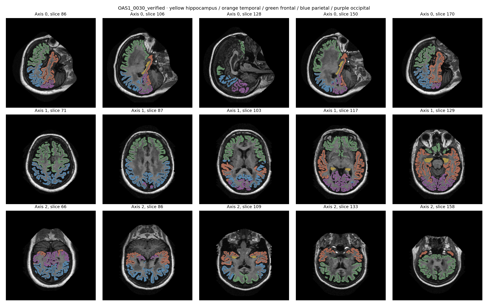
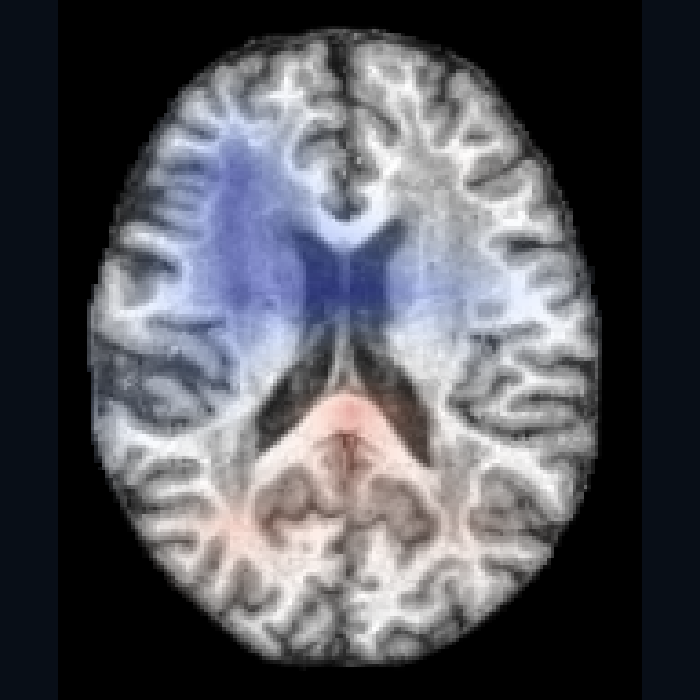

Assessment dashboard
Brain age assessment.
Review the age estimate and explore the MRI explanation. Research prototype — not a diagnostic report.
Patient: IXI170 · IXI361 · IXI566 · DLBS sub-3898 · OAS2_0007 · Longitudinal
Regional analysis & reference data
Healthy-control percentile: — · Not yet validated against controls.
Regional volumes require anatomical segmentation and registration review. Volume differences cannot be converted into years without a validated age-reference model.

Experimental regional measurements
Orientation review pending · Not approved clinical measurements. Bilateral totals are shown because left/right orientation is unresolved.
Measured volumes, not regional ages or healthy-control percentiles. Temporal, frontal and parietal lobes still require cortical parcellation.

Image could not load. Try another view or reload the page.
← → Switch views · Blue: negative / Red: positive attribution
Blue — negative attribution
Negative contribution to the model's age output.
Red — positive attribution
Positive contribution to the model's age output.
Stronger color means larger normalized attribution, not a number of years. This coarse explanation is not a disease map; blue does not mean healthy and red does not mean Alzheimer disease.
Schematic hotspot — not generated by the model
Invented visits for interface demonstration. Longitudinal performance and reference trajectories are not validated.
Separate patient example: OAS2_0001 follow-up →
Longitudinal · OAS2_0001
2 MRI visits · 457 days apart
Research estimate; age is underestimated in this case. Not a diagnosis.